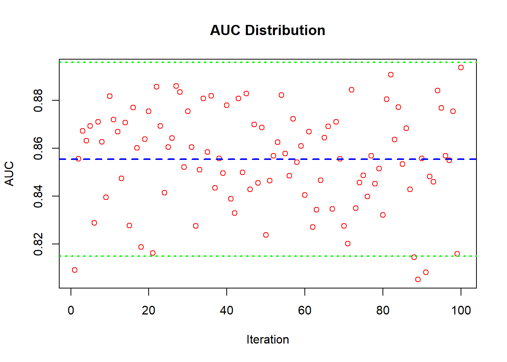
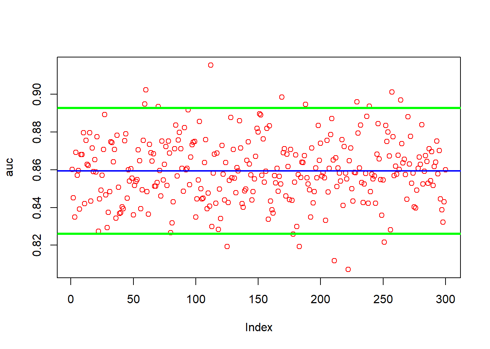
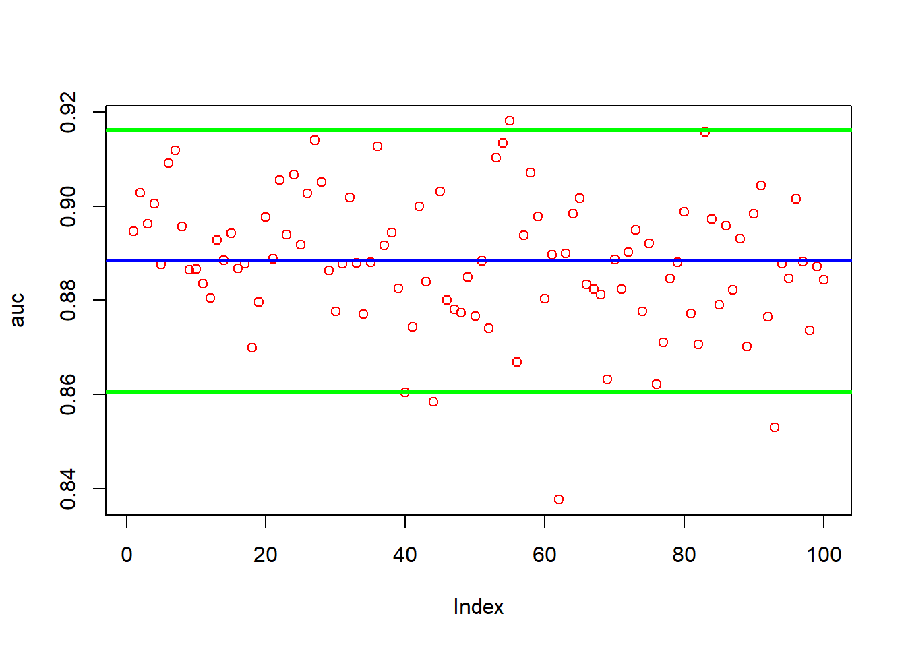

Download the Data
the columns i will use are y (Survived), Pclass, Sex, Age, SibSp, Parch, Fare, Emarked as they are the easiest to work with. other possibilities include using the titles for names
##
## Attaching package: 'dplyr'## The following objects are masked from 'package:stats':
##
## filter, lag## The following objects are masked from 'package:base':
##
## intersect, setdiff, setequal, uniondata <- train_titanic[ ,c(2, 3, 5, 6, 7, 8, 10, 12)]
data <- data %>% rename(y = Survived)
data$y <- factor(data$y)Convert the characters to factors.
We have NAs we need to deal with
## y Pclass Sex Age SibSp Parch Fare Embarked
## 0 0 0 177 0 0 0 0Firsts i am going to predict the NAs for Age with a simple Random Forest model.
na_index <- which(is.na(data$Age))#index the missing NAs
na_data <- data[na_index, ]#create a data frame of the NAs indexed
c_data <-data[-na_index, ]#take the complete data to c_data
na_data <- na_data[, -which(names(data) == "Age")] # take out the collum that only has NAs in iti will use na.roughfix() for the two missing Embarked values
## randomForest 4.7-1.1## Type rfNews() to see new features/changes/bug fixes.##
## Attaching package: 'randomForest'## The following object is masked from 'package:dplyr':
##
## combinePredict our NAs
library(randomForest)
model_rf <- randomForest(Age ~.,
ntree = 1200,
data = c_data)
pred_na <- predict(model_rf, na_data)Bind our predictions to the corresponding index number for each missing NA in “data”
finnaly just use na.roughfix() for the two embarked values since it is so little
## y Pclass Sex Age SibSp Parch Fare Embarked
## 0 0 0 0 0 0 0 0Now do the same for our test set
## 'data.frame': 891 obs. of 8 variables:
## $ y : Factor w/ 2 levels "0","1": 1 2 2 2 1 1 1 1 2 2 ...
## $ Pclass : int 3 1 3 1 3 3 1 3 3 2 ...
## $ Sex : Factor w/ 2 levels "female","male": 2 1 1 1 2 2 2 2 1 1 ...
## $ Age : num 22 38 26 35 35 ...
## $ SibSp : int 1 1 0 1 0 0 0 3 0 1 ...
## $ Parch : int 0 0 0 0 0 0 0 1 2 0 ...
## $ Fare : num 7.25 71.28 7.92 53.1 8.05 ...
## $ Embarked: Factor w/ 4 levels "","C","Q","S": 4 2 4 4 4 3 4 4 4 2 ...Y has to be numeric for lm. also i am facing a issue where for some of the splits not all factor levels from embarked are being selected which will produce a error. since lm is more of a basline i will simply remove embarked. i know that glm exists but i prefer lm as a basline.
data_lm <- data
data_lm$y <- as.numeric(data_lm$y)
data_lm$y <- data_lm$y - 1 # bring it back to 1 and 0s
data_lm <- data_lm[, -which(colnames(data_lm) == "Embarked")]## Loading required package: iterators## Loading required package: parallellibrary(ROCR)
n <- 100 # Number of bootstrap samples
obs <- nrow(data_lm) # Assuming data_lm is already defined
numCores <- detectCores() - 1
cl <- makeCluster(numCores)
registerDoParallel(cl)
# Run parallel computation with bootstrapping
auc_list <- foreach(i = 1:n, .packages = "ROCR") %dopar% {
idx <- sample(obs, obs, replace = TRUE)
trn <- data_lm[idx, ] # Training data
tst <- data_lm[-idx, ] # Test data
mdl <- lm(y ~ ., data = trn)
phat <- predict(mdl, tst)
pred <- prediction(phat, tst$y)
performance(pred, "auc")@y.values[[1]]
}
stopCluster(cl)
# Process the AUC results
auc_values <- unlist(auc_list)
mean_auc <- mean(auc_values)
sd_auc <- sd(auc_values)
results <- list(mean = mean_auc, sd = sd_auc)
# Plot AUC values, mean, and confidence intervals
plot(auc_values, col = "red", main = "AUC Distribution", xlab = "Iteration", ylab = "AUC")
abline(h = mean_auc, col = "blue", lwd = 2, lty = 2) # Mean line
abline(h = mean_auc - 1.96 * sd_auc, col = "green", lwd = 2, lty = 3) # Lower CI
abline(h = mean_auc + 1.96 * sd_auc, col = "green", lwd = 2, lty = 3) # Upper CI
## $mean
## [1] 0.8553582
##
## $sd
## [1] 0.02061184This is using default params but once again it is mearly a baseline to examine
library(rpart)
library(ROCR)
library(foreach)
library(doParallel)
n <- 100 # Number of iterations
obs <- nrow(data) # Total number of observations in your dataset
numCores <- detectCores() - 1
cl <- makeCluster(numCores)
registerDoParallel(cl)
# Performing bootstrapping in parallel
auc <- foreach(i = 1:n, .packages = c("rpart", "ROCR")) %dopar% {
idx <- unique(sample(obs, obs, replace = TRUE))
train <- data[idx, ]
test <- data[-idx, ]
model <- rpart(y ~ ., data = train, method = "class")
phat <- predict(model, test, type = "prob")[, 2]
pred_rocr <- prediction(phat, test$y)
auc_ROCR <- performance(pred_rocr, measure = "auc")@y.values[[1]]
return(auc_ROCR)
}
stopCluster(cl)
# Combine the results
auc_values <- unlist(auc)
mean_auc <- mean(auc_values)
sd_auc <- sd(auc_values)
# Plotting the AUC values along with mean and confidence intervals
plot(auc_values, col="red", pch=16, xlab="Iteration", ylab="AUC", main="AUC Distribution")
abline(h = mean_auc, col = "blue", lwd = 2, lty = 2) # Mean AUC
abline(h = mean_auc - 1.96 * sd_auc, col = "green", lwd = 2, lty = 3) # Lower 95% CI
abline(h = mean_auc + 1.96 * sd_auc, col = "green", lwd = 2, lty = 3) # Upper 95% CI
This is a Random Forest Algorithm that uses Parallel processing. In the loop ntree is set to B. I use Bootstrapping data samples instead of k-fold-cross-validation as it is more robust and lets me reproduce the model as many times as i like.
library(randomForest)
library(ROCR)
library(foreach)
library(doParallel)
B <- 1200
n <- 100 # this number times 3
obs <- nrow(data) # observations
numCores <- detectCores()-1
cl <- makeCluster(numCores)
registerDoParallel(cl)
lst <- foreach(i=1:n, .packages = c("randomForest", "ROCR")) %dopar% {
idx <- unique(sample(obs, obs, replace = TRUE))
train <- data[idx,]
test <- data[-idx, ]
model <- randomForest(y ~ ., ntree = B, data = train)
phat <- predict(model, test, type = "prob")
pred_rocr <- prediction(phat[,2], test$y)
auc_ROCR <- performance(pred_rocr, measure = "auc")
auc_ROCR@y.values[[1]]
}
stopCluster(cl)
# combine the results
auc <- unlist(lst)
# plot auc and mean
plot(auc, col="red")
abline(a = mean(auc), b = 0, col = "blue", lwd = 2)
abline(a = mean(auc)-1.96*sd(auc), b = 0, col = "green", lwd = 3)
abline(a = mean(auc)+1.96*sd(auc), b = 0, col = "green", lwd = 3)